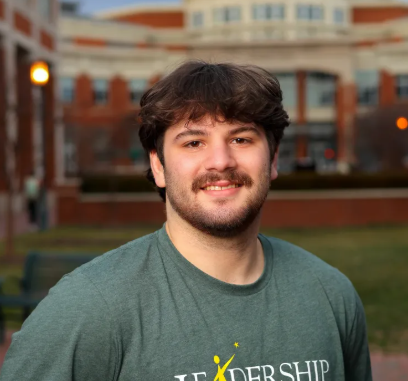
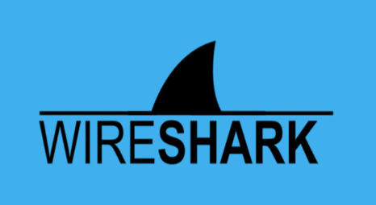
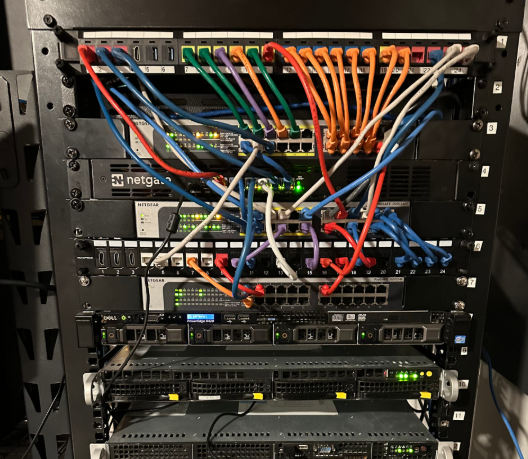
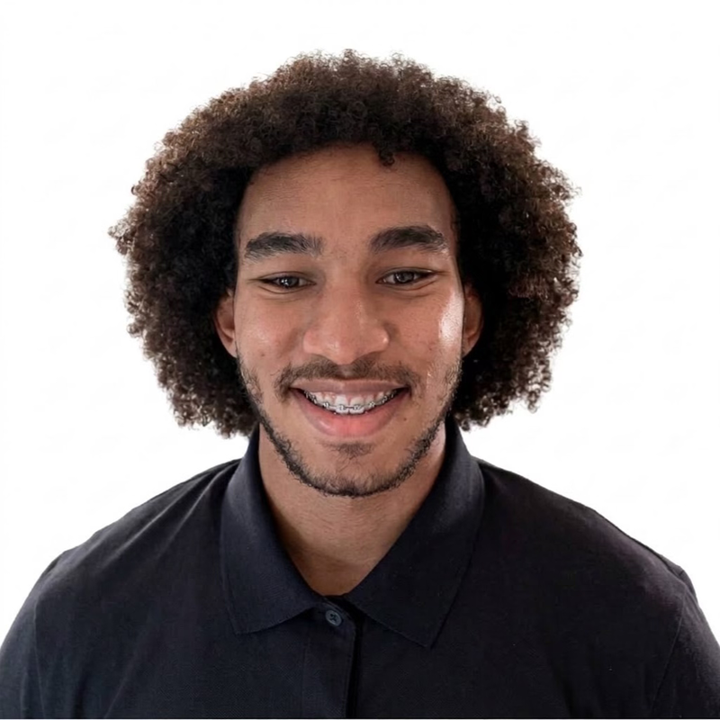
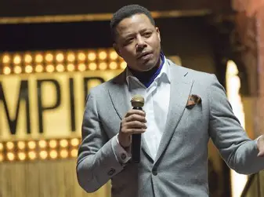

Team 2
<code · build · ship />
<code · build · ship />

Instructional Assistant / Computer Science
I am a junior Computer Science student at UNC Charlotte concentrating in Systems & Networks with a minor in Mathematics. I am an Instructional Assistant for Intro to Operating Systems and Networking, Vice President and founding member of CS Create, and a peer mentor for Leadership Fellows. I enjoy learning how things work under the hood and turning technical challenges into practical solutions.



AI Engineer / Computer Science
I am a Computer Science student at UNC Charlotte with a minor in Computer Engineering, and an AI Engineer at Ingersoll Rand. I also founded SearchTern, a platform with 15,000+ curated internship listings and a built-in application tracker. I have loved building computers and software since I was a kid, especially seeing how hardware and software work together to solve real problems.

Developer / Computer Science
I am a Computer Science student at UNC Charlotte and a developer at SearchTern, where I help build tools that make the internship search easier for students.
.PNG)
Frontend Developer / Computer Science
I am a senior Computer Science student at UNC Charlotte. I am concentrating in Information Technology and also studying Cybersecurity in my free time.
